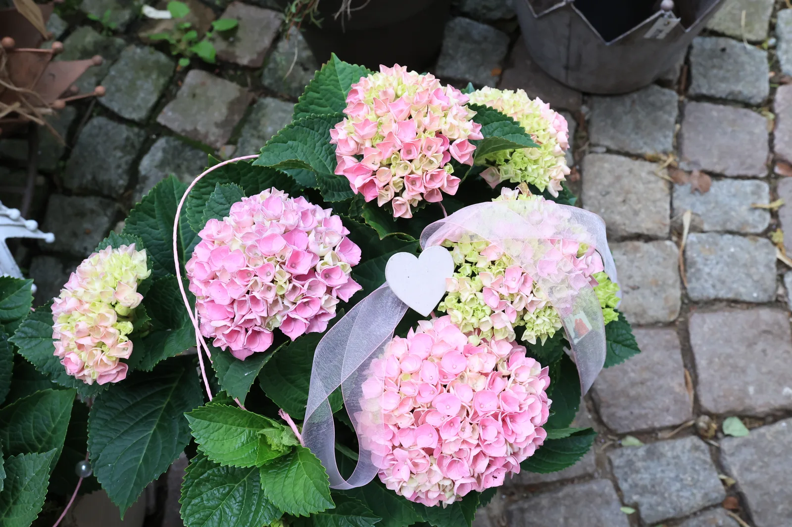
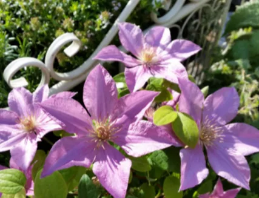
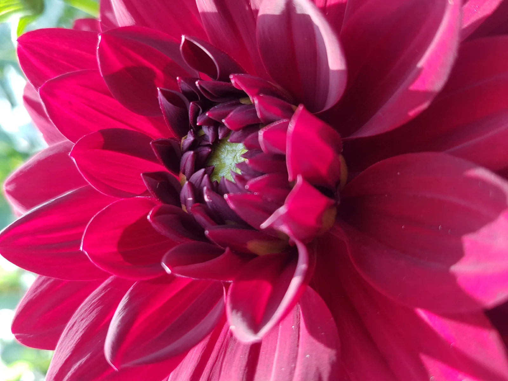

Pflanzen & Blüten
Saisonale Beet- und Balkonpflanzen, Stauden, Rosen, Gehölze und Pflanzen für drinnen.
Gartenwelt
Ein Garten zum Entdecken. Pflanzen zum Verlieben. Und besondere Stücke, die Ihren Außenbereich persönlich machen.

Entdecken Sie unsere Gartenwelt
Das Sortiment wechselt mit den Jahreszeiten. Wir beraten Sie gerne zu Auswahl und Verfügbarkeit.

Saisonale Beet- und Balkonpflanzen, Stauden, Rosen, Gehölze und Pflanzen für drinnen.
Metall- und Holzgartenmöbel, Rankhilfen, Rosenbögen und besondere Gartendekoration.

Auf unserem Gartengelände wachsen eigene Freilandschnittblumen für individuelle Sträuße.
Von der Idee zur grünen Oase
Wir unterstützen Sie bei Gartenplanung, Pflege und Rückschnitt. Bringen Sie für eine Beratung gerne Fotos Ihres Gartens mit.
Auch Pflanzgefäße aus Terrakotta und anderen Materialien, englischer Antiksteinguss und Dekoration aus Eisen gehören zu unserer Gartenwelt.
Gartenberatung anfragenBegegnungen im Gartenpark
Mit Bewirtung im Gartenpark. Anmeldung für Aussteller über die unten genannte Kontaktadresse. Uhrzeit und weitere Details bitte beim Veranstalter erfragen.
Neue Termine erfahren Sie direkt bei uns im Geschäft.
Persönlich. Individuell. Mit Liebe.
Erzählen Sie uns von Ihrem Anlass. Gemeinsam finden wir die passenden Blumen.
Lassen Sie uns sprechen